꽃냉장고
꽃집 오픈 체크리스트, 공사 전부터 오픈 전날까지 설비 편
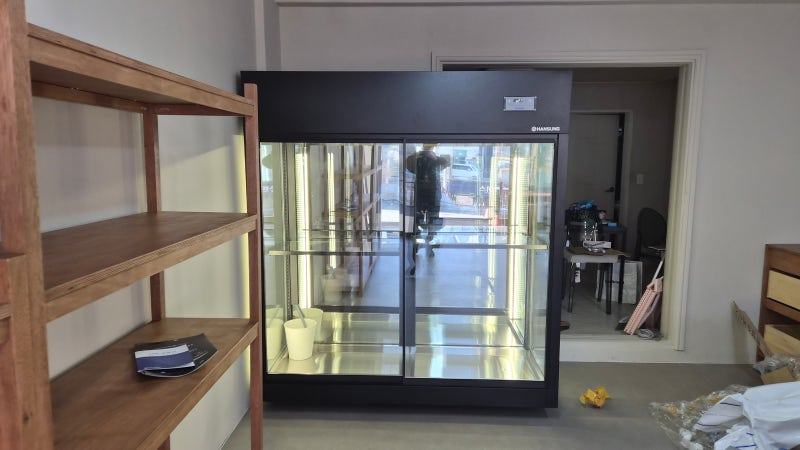
꽃집 오픈 준비는 인테리어 마감재보다 꽃냉장고 자리와 사양을 먼저 정하는 것이 순서입니다. 공사 전에 냉장고 위치·전기·배관을 확정하고, 취급하는 꽃에 맞는 온도 구역과 조명 발열 관리를 확인한 뒤, 오픈 며칠 전 시운전까지 마쳐 두세요.
안녕하세요. 생화가 오래 버티는 꽃냉장고를 만드는 한성쇼케이스입니다.
꽃집 오픈을 준비하시는 사장님들을 뵈면 바닥재, 벽 색, 조명까지는 꼼꼼히 고르시면서 정작 꽃냉장고는 공사가 다 끝난 뒤 남은 벽에 맞춰 급하게 고르시는 경우가 많습니다.
그렇게 들인 냉장고가 냉각력이 약하거나 자리가 어긋나면, 아침마다 시든 꽃을 골라내는 일이 반복되고 심하면 마감한 벽이나 배관을 다시 뜯어야 하는 일도 생깁니다.
오늘은 꽃집 오픈 체크리스트를 설비 중심으로, 공사 전부터 오픈 전날까지 단계별로 정리해 드리겠습니다.
1. 공사 전: 꽃냉장고 자리부터 확정
꽃냉장고는 전기 용량과 배수, 열이 빠질 공간이 필요한 설비입니다. 인테리어 도면을 그릴 때 냉장고 자리를 먼저 정해야 콘센트와 배관을 맞춰 뺄 수 있고, 마감이 끝난 벽을 다시 뜯는 일을 막을 수 있습니다.
출입구에서 손님이 처음 보는 벽에 냉장고를 둘지, 작업대 뒤쪽에 둘지도 이때 정합니다. 쇼윈도 역할을 겸한다면 외부 햇빛이 유리에 직접 닿는지도 함께 확인해 보세요.
- 냉장고 설치 벽의 폭·높이 실측
- 전용 콘센트와 전기 용량
- 배수 경로와 열 배출 공간
- 햇빛이 직접 드는 자리인지
2. 꽃냉장고 사양: 꽃 종류와 조명 열
모든 꽃을 같은 온도에 두면 안 됩니다. 대부분 낮은 온도에서 오래가지만, 열대성 꽃은 너무 차가우면 냉해를 입습니다.
취급할 꽃 목록을 먼저 적고, 온도 구역을 나눌 필요가 있는지 상담 때 꼭 이야기하세요.
같은 크기라도 단열 구조와 순환팬 배치에 따라 여름철 냉각 부하가 달라집니다. 조명도 그냥 넘기지 마세요.
LED도 열을 내기 때문에 조명이 꽃에 너무 가깝거나 회로가 내부와 함께 묶여 있으면 꽃이 직접 열을 받을 수 있습니다.
전면 유리는 손자국과 물방울이 잘 보이는 자리라 닦기 쉬운지, 오염에 강한지도 체크해 두시면 운영이 편해집니다.
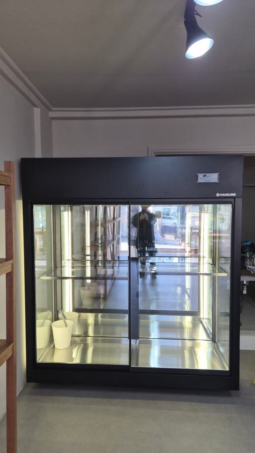
3. 동선: 문 방향과 작업 공간
출입구 위치와 손님 동선에 따라 냉장고 문이 열리는 방향과 문 개수가 달라집니다. 문을 열었을 때 손님 통로를 막거나 작업대와 부딪히지 않는지 도면 위에서 미리 그려 보세요.
꽃을 꺼내 다듬고 포장하는 작업대는 냉장고와 가까울수록 꽃이 상온에 머무는 시간이 줄어듭니다. 물통을 씻는 개수대와 쓰레기 동선까지 함께 정해 두면 바쁜 기념일 시즌에도 동선이 엉키지 않습니다.
- 문 여는 방향과 통로 간섭
- 냉장고와 작업대 사이 거리
- 물통 세척 개수대 위치
4. 오픈 직전: 시운전과 첫 입고
냉장고는 설치 당일 바로 꽃을 넣기보다 미리 전원을 켜 두고 설정 온도까지 안정적으로 내려가는지, 칸마다 온도 차이가 크지 않은지 확인하는 편이 안전합니다.
소음이 거슬리는지도 영업시간처럼 문을 닫고 들어 보세요.
첫 입고 때는 꽃을 빽빽하게 채우지 말고 냉기가 돌 여유를 두세요. 며칠 동안 꽃 상태를 기록해 두면 어느 칸에 어떤 꽃을 둘지 기준이 빨리 잡힙니다.
고장 접수 번호와 가까운 A/S 센터도 이때 적어 두시면 좋습니다.
시운전 기간에는 조명도 영업시간과 같게 켜 두고 꽃 색이 어떻게 보이는지 확인해 보세요. 사진으로 남겨 두면 나중에 조명 색이나 위치를 바꿀 때 비교 기준이 됩니다.
체크리스트
- 공사 도면에 꽃냉장고 위치 반영
- 취급 꽃 목록과 온도 구역
- 조명 발열과 회로 분리 여부
- 문 방향·작업대 동선
- 오픈 전 시운전과 칸별 온도 확인
- A/S 접수 연락처 메모
리뉴얼하면서 꽃냉장고를 교체한 꽃집 사례
기존 매장 인테리어를 새로 바꾸면서 꽃냉장고까지 교체하신 꽃집 사례입니다. 이전에 쓰던 냉장고는 단열이 약해 여름마다 냉각 부하가 커졌고, 매일 아침 시든 꽃을 골라내는 일이 반복되고 있었습니다.
교체한 제품은 설계 단계에서 순환팬 배치와 단열 구조를 계산하고, 조명 회로를 따로 분리해 꽃이 조명 열을 직접 받지 않게 만들었습니다.
냉각이 안정되면서 시든 꽃을 고르는 시간과 버리는 꽃이 줄었다는 이야기를 전해 주셨습니다.
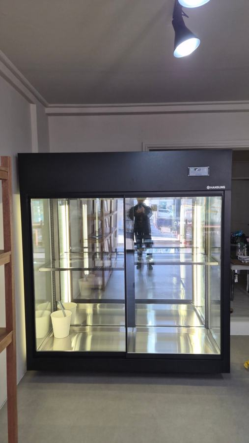
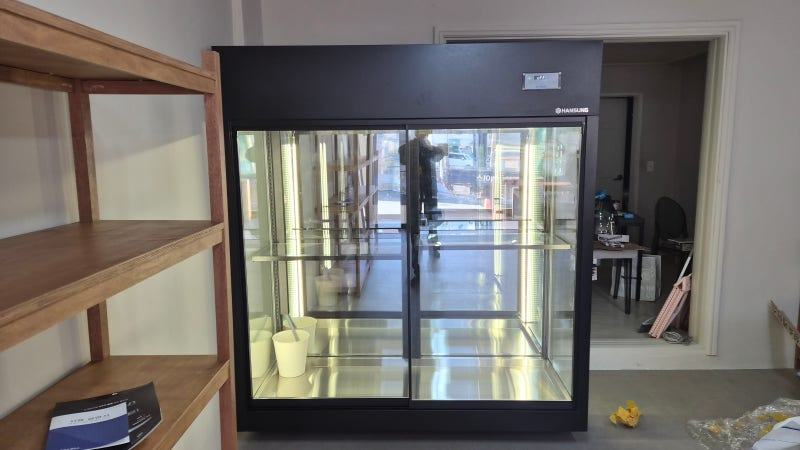
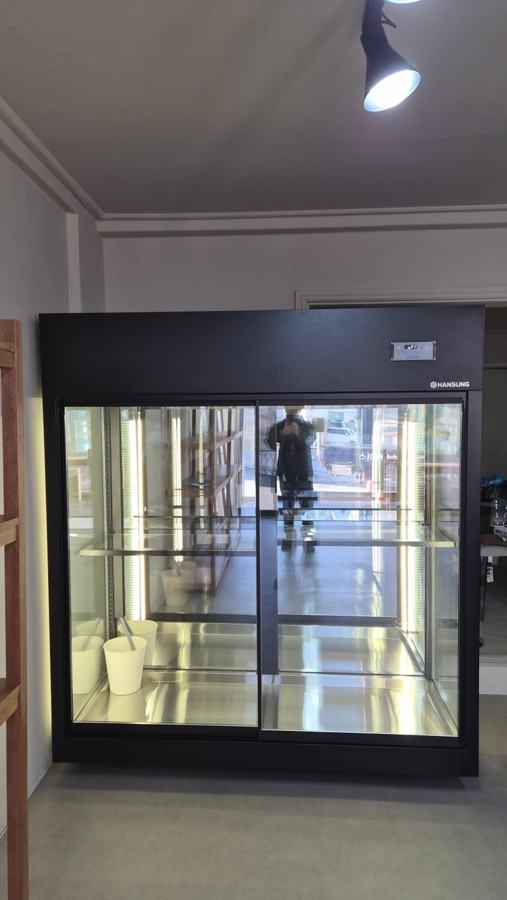
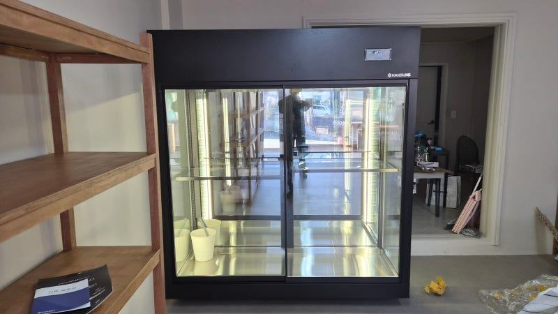
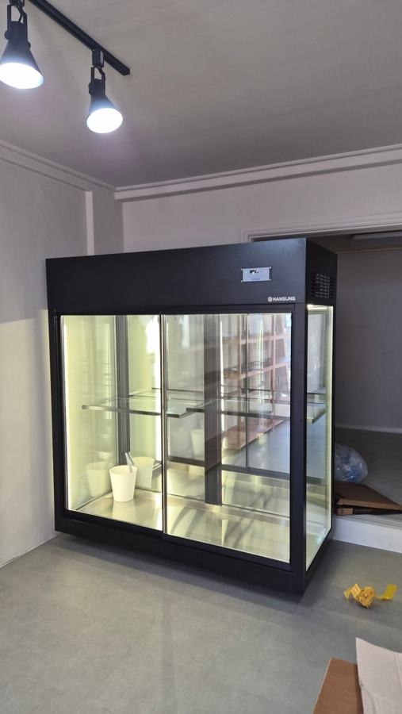
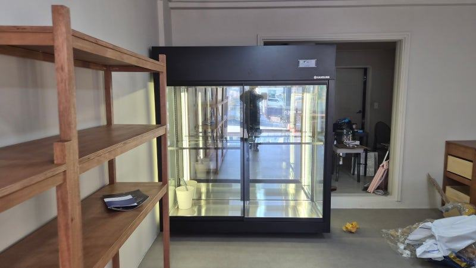
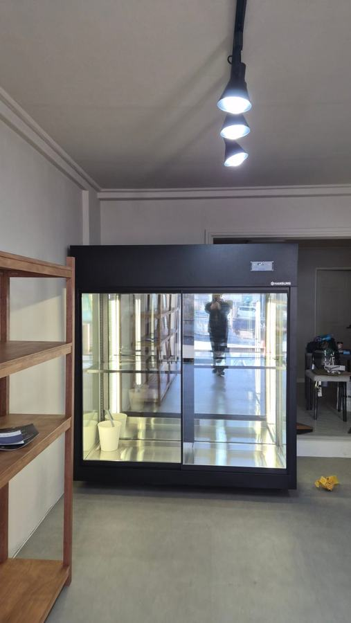
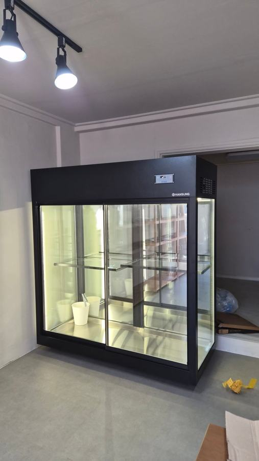
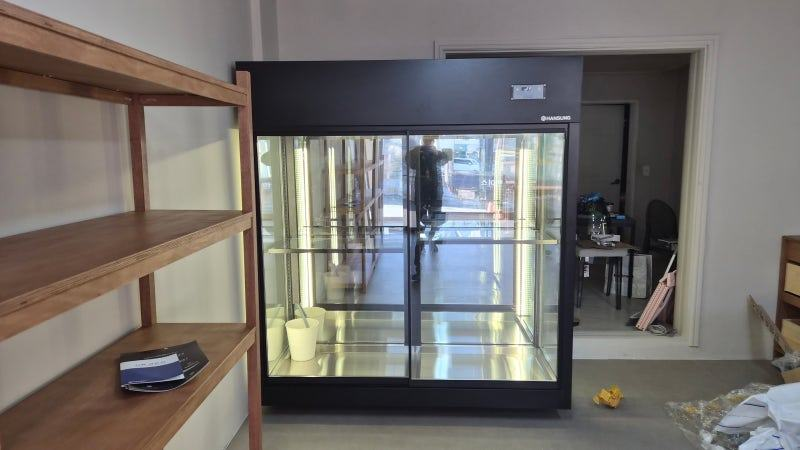
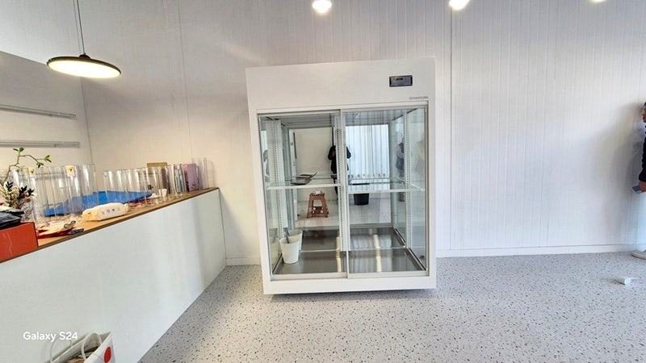
| 구분 | 저가형 제품 | 한성쇼케이스 |
|---|---|---|
| 단열 구조 | 얇고 약한 편 | 설계 단계부터 계산 |
| 여름철 냉각 부하 | 급증하는 편 | 순환팬 배치로 분산 |
| 소음 | 압축기 부하로 커짐 | 상대적으로 낮음 |
| 조명 발열 관리 | 별도 분리 없음 | 조명 회로 별도 분리 |
자주 묻는 질문
인테리어가 이미 끝났는데 꽃냉장고를 맞춤으로 넣을 수 있나요?
가능한 경우가 많지만 전기와 배수 위치에 따라 제약이 생길 수 있습니다. 현장 사진과 도면을 먼저 보내 주시면 기존 마감을 최대한 살리는 방향으로 크기와 구성을 맞춰 드립니다.
작은 꽃집인데 냉장고를 하나만 둬도 될까요?
회전이 빠르고 취급하는 꽃 종류가 적다면 한 대로도 운영할 수 있습니다. 다만 열대성 꽃처럼 온도 기준이 다른 꽃이 많다면 칸을 나누거나 보조 냉장고를 두는 것이 좋습니다.
오픈 후 냉장고 고장이 나면 어떻게 하나요?
전국 240여 개 A/S 센터를 통해 접수와 출장 대응을 진행합니다. 오픈 전에 대표전화 031-986-2458을 매장 연락처 목록에 적어 두시면 급할 때 바로 연락하실 수 있습니다.
매장 조건에 맞춰 만드는 한성쇼케이스
원하시는 제품 사진과 설치할 공간 사진만 보내 주셔도 매장에 맞는 구성을 추천해 드립니다.
- 전국 240여 개 A/S 전담 센터 운영
- 본사 대량 자재 매입으로 품질 대비 합리적인 가격
- 유럽제·삼성 냉각 콤프레셔 적용
- 국내 최초 쇼케이스 전문 디자이너 상주
매장 폭과 원하는 진열 구성을 알려 주세요. 실측과 견적을 안내해 드립니다.
031-986-2458